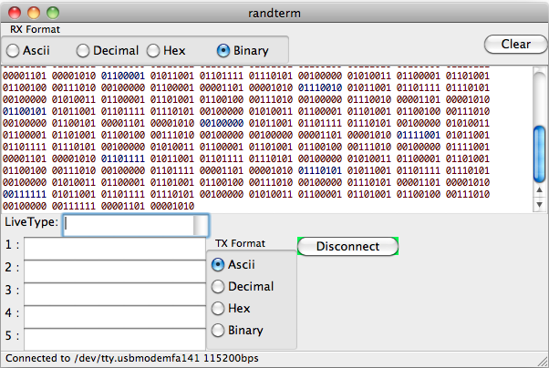
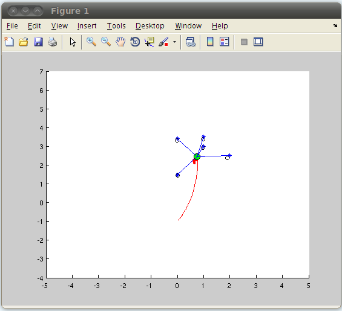

I had a ton of fun writing this site because I used it as an excuse to learn as much as possible about modern web programming. Here's how the site works:
Randterm is a simple python serial terminal inspired by the awesome (but Windows only) Realterm. It was built mainly to help me debug serial protocols for microcontrollers, and so it includes the ability to send and display data in ascii, decimal, hex, or binary.
A bare-bones implementation of FastSLAM 1.0 written for MATLAB/Octave, written mostly for education. It simulates a robot cruising around a 2D environment, occasionally receiving range and bearing measurements to landmarks. The task of the robot is to simultaneously build a map of the environment, and to localize itself within that map.
